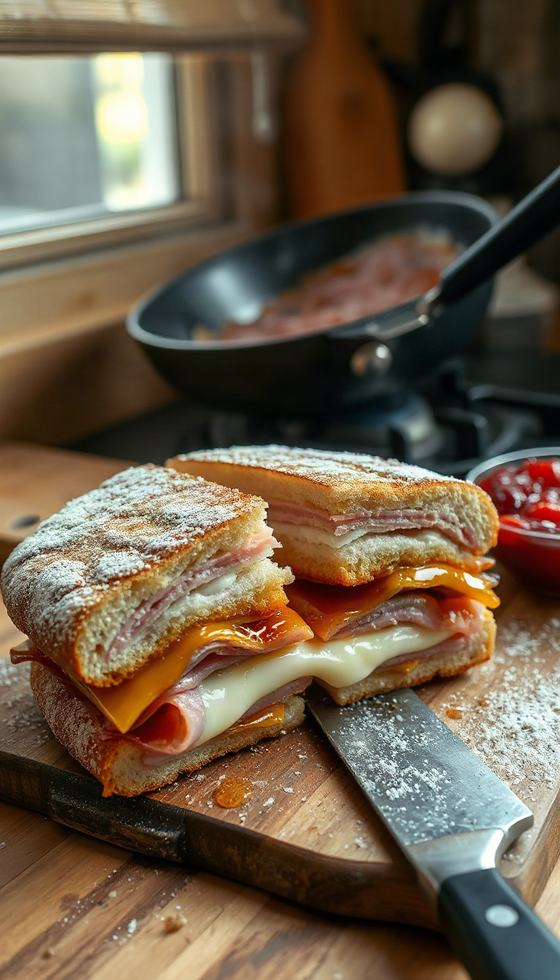
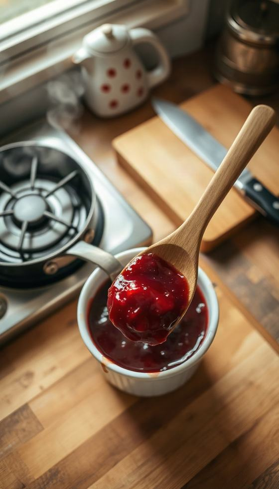

$5 vs $50
$5 Leftover Turkey Monte Cristo
About $4.75* · 2 servings · 15 min
*Prices are estimates and may differ from what you pay. How we price recipes
Two brunch Monte Cristos ran me $50. This one's $4.75 for two, and it uses your Thanksgiving turkey.




Ingredients
- 2 large eggs
- 1/4 cup milk
- Pinch of salt
- 1 tsp Dijon mustard
- 4 slices white sandwich bread
- 2 slices Swiss cheese (about 40 g total)
- 3 oz leftover roast turkey, sliced (refrigerated no more than 3-4 days, thawed from frozen, or deli turkey)
- 1.5 oz sliced deli ham
- 1 tbsp butter
- 1 tsp powdered sugar, for dusting
- 2 tbsp leftover cranberry sauce, warmed, for dipping
Steps
- In a shallow dish, whisk the eggs, milk and a pinch of salt until no streaks of white remain.
- Build 2 sandwiches. Spread Dijon on 2 slices of bread. Layer 1 slice of Swiss, half the turkey and half the ham on each, then top with the remaining bread and press down gently.
- Melt the butter in a large nonstick skillet over medium-low heat. Dip each sandwich into the egg mixture for about 5 seconds per side, letting the excess drip off.
- Cook the sandwiches covered with a lid for 3-4 minutes, until the bottoms are deep golden. Flip, cover again, and cook another 3-4 minutes. They're ready when the cheese is fully melted and the center is steaming hot (165°F/74°C on an instant-read thermometer).
- While the second side cooks, warm the cranberry sauce in the microwave for 20-30 seconds and stir until loose.
- Cut each sandwich in half diagonally, dust with powdered sugar, and serve right away with the warm cranberry sauce for dipping.
What you'll need
Gear links go to Amazon (Amazon.ca, or Amazon.com in the US). As an Amazon Associate I earn from qualifying purchases, at no extra cost to you.
Watch the videoMore $5 recipes
About the prices: they're estimates, not quotes. Since Nov 2026 they're based on Statistics Canada's monthly average retail prices where an item is listed (Open Government Licence - Canada), otherwise on typical Canadian grocery prices, and count only the amount of each ingredient used, not whole packages. What you pay will vary by store, location, brand, sales, taxes and date, and any pantry staples you need to buy will add to it. Recipe visuals and narration are AI-generated.